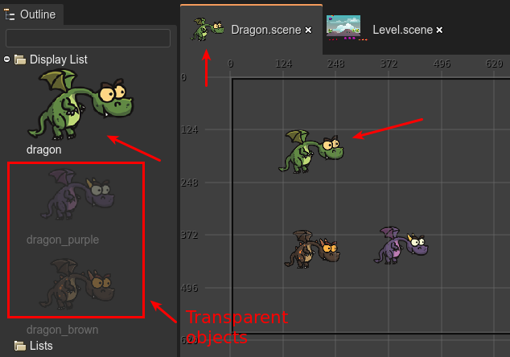
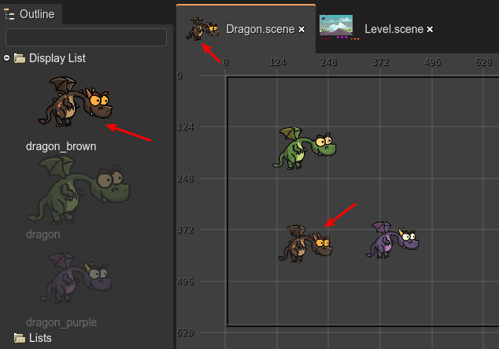

The prefab object
The prefab object is the object at the top of the prefab file. You can add many objects to the display list of the prefab, but only the one at the top will be considered as the real prefab, the other objects will be ignored.
We did it this way for simplicity, but it also allows us to create different versions of the prefab object and move them to the top of the list in case we want to promote a different object as the prefab object.
Look in the next image, it shows the Dragon prefab. There are three objects in the file, but only the green dragon object will be used as the prefab object of the Dragon prefab. Also, look the others, non-top objects are rendered transparent in the Outline view:
If later you decided to use a different dragon for your prefab, then you can move it to the top of the display list and that’s all:
Another characteristic of the prefab object is that you cannot edit its Variable properties, because, in the generated code, it is not referenced as a variable, it is referenced as this.
The prefab object could be any object of any type (an image, a text, a container, whatever type supported by the Scene Editor), even, it could be a prefab instance. When the prefab object is a prefab instance (of the prefab SomePrefab) then we say it is a prefab variant of the SomePrefab prefab.
Automatic Container creation
In many cases, your prefab will be a single object, like an image. In other cases, you do group several objects in a Container.
To simplify the workflow of creating a prefab, the Scene Editor will follow these rules:
If you add an object in an empty prefab scene, the new object will be the prefab object.
If you create an object, but the prefab scene already contains a prefab object, then:
2.1. If the prefab object is a Container , the new object is added to it.
2.2. If the prefab object is not a Container, then a new Container will be created to group the old prefab object and the new object. Finally, the newly created container will be the new prefab object.
In a few words, following these rules, the Scene Editor automatically group the objects in a Container, if needed.